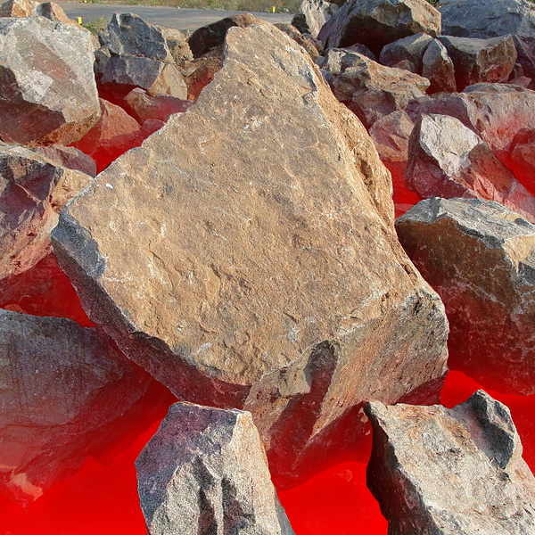

<!DOCTYPE html>
<html>
	<!--<head>
		<title>The Crucible Literary Analysis</title>
		<style>
			body {
				background-color:rgb(5,0,20);
				font-family: Verdana, Arial, san-serif;
				color: white;
			}
			h2 {
				color:white;
				font-family:Copperplate,serif;
				border-bottom: 2px solid rgb(200,100,100);
			}
			h1 {
				color: black;
				background-color:rgb(245,240,255);
				border:4px solid rgb(200,0,100);
				border-radius: 10px 30px 30px 0px;
				font-family:"Lucida Handwriting",serif;
				padding-right:30px;
			}
			.intro {
				display: block;
				color:rgb(255,230,250);
				font-weight: bold;
			}
			b {
				color:rgb(255,205,205);
			}
			.row {
				display:table;
				width: 100%;
				margin:6px 0;
				border-collapse: separate;
				border-spacing: 6px 0;
			}
			.box {
				display: table-cell;
				border:4px solid rgb(210,200,255);
				padding:4px;
				border-radius:16px;
				word-wrap: break-word;
				background:rgb(25,15,35);
				text-align: center;
			}
			.innerBox {
				display: block;
				border:2px solid rgb(210,200,255);
				margin:2px;
				padding:0px 8px;
				background:rgb(35,25,45);
				border-radius:5px;
			}					
			img {
				border-radius:3px;
				margin:5px;
				width:100px;
			}
			i {
			color: rgb(210,250,230);
			font-family:"Times New Roman", serif;
			}
			.innerBox p {
				text-align: justify;
				padding:0px 2px;
			}
			.box p {
				text-align: justify;
				padding:0px 2px;
			}
			.citations {
				text-indent:-48px;
				font-family: "Lucida Console", Monaco, monospace;
				margin:0px 0px 0px 48px;
			}
			html {
				scroll-behavior: smooth;
			}
			.cit {
				color:rgb(255,225,190);
				font-size: x-small;
				vertical-align: sub;
				font-weight: bold;
				text-decoration:none;
			}
			.citations i {
				color: inherit;
				font-family: inherit;
			}
			.citations a {
				color: inherit;
				text-decoration:inherit;
			}
			.itext {
				position:absolute;
				display:block;
				opacity:0;
				width:100;
				height:100;
				top:-5px;
				font-size:small;
				text-justify:none;
				transition:opacity 0.15s;
				text-shadow: 0px 0px 2px #000000;
				left:calc(50% - 50px);  //incase the div is >100px wide
				word-wrap: break-word;
			}
			.itext:hover {
				opacity:1;
			}
			.itext a {
				color:white;
			}
		</style>
	</head>
	<body>
		<h1 style="margin-bottom:0px;">The Crucible Literary Analysis</h1>
		<i style="margin-top:0px; margin-bottom:22px;">By Quentin</i>
		<h2>Prompt</h2>
		<p>The prompt that I choose was <b>Prompt 3 of Honors.</b></p>
		<i>&#10077;Why was 1690s Salem, Massachusetts, vulnerable to a witch hunt?  Consider politics, culture, human faults, religion, personal vendettas, and superstitions as you examine reasons.&#10080;</i>
		<div class="row">
			<div class="box" style="width:50%;">
				<h2>Strict religion & culture</h2>
				<p class="intro">The <b>strict religion and rules</b> made the Puritans susceptible to witch trials because <b>difference</b> was <b>not allowed,</b> so <b>unrest could grow.</b> Then when problems developed, the people needed to blame something or someone like a witch.</p>
				<div class="innerBox">
					<table>
						<td>
							<div style="position:relative;"><p class="itext">Made by Quentin, I used <a href="https://www.geograph.org.uk/photo/5579998">this photo</a></p></div>
						</td>
						<td>
							<p>Early in the story, Hale is a strong believer in the church. He says, <i>&#10077;Theology, sir is a fortress; no crack in a fortress may be accounted small.&#10080;</i><a href="#miller" class="cit">(Miller 614)</a> This shows that Hale and others believe in the perfection of their <b>religion</b>, and how it is <b>influential</b> in <b>every aspect of their lives.</b></p>
						</td>
					</table>
				</div>
				<div class="innerBox">
					<table>
						<td>
							<p>Puritanism includes predestination, a belief that God chooses certain individuals who are spared from hell before they're born, and that their actions in life will not change this final outcome. The opposite of this belief is that there is a Devil, who is trying to turn people toward wicked ways, which <b>opens up a possibility that witches exist.</b><i>&#10077;The Devil is precise. The mark of his presence is definite as stone&#10080;</i><a href="#miller" class="cit">(Miller 588)</a> said Hale, showing that the <b>Puritans believe in strict morality</b> and when <b>people are unmoral</b> it's because they are <b>tempted by the Devil.</b></p>
						</td>
						<td>
							<div style="position:relative;"><p class="itext">Made by<br>Quentin, I used <a href="https://commons.wikimedia.org/wiki/File:A_close-up_of_stone.JPG">this photo.</a></p></div>
						</td>
					</table>
				</div>
				<div class="innerBox">
					<table>
						<td>
							<div style="position:relative;"><p class="itext" style="top:40px;left:30px;">Made by Quentin</p></div>
						</td>
						<td>
						<p>The Puritan religion saw the world in simple terms of <b>good versus evil.</b><i>&#10077;There was also a general distrust and suspicion at the time. For instance, if a cow suddenly died, its owner would likely think one of his neighbors had cursed him. A man would not dare to question God’s judgment; he just questioned it being aimed at him. If he searched his soul and found he had done nothing to deserve the death of his cow, he would blame the misfortune on the devil acting through a witch.&#10080;</i><a href="#hysteria" class="cit">("The Salem, Massachusetts Witchcraft Hysteria")</a> There was <b>a lot of hardship</b> in Salem in the 1690s between bad weather, crop failure, disease, and others. Because of this there was <b>a lot to blame on witches.</b></p>
						</td>
					</table>
				</div>
			</div>
			<div class="box">
				<h2>Powerful religious leaders</h2>
				<p class="intro">The <b>religious leaders convinced the villagers</b> with their sermons about the <b>evil presence of witches.</b> They conducted the witch trials in such a way that they could maintain control.</p>
				<div class="innerBox">
					<p>Parris had a strong influence on the villagers, and what he, or <b>any leader of the church, said</b> was taken to be <b>unquestioned truth.</b><i>&#10077;Some historians have also blamed Reverend Samuel Parris for the witch trials, claiming he was the one who suggested to the Salem villagers that there were witches in Salem during a series of foreboding sermons in the winter of 1692&#10080;</i><a href="#brooks" class="cit">(Brooks)</a> Because of strong trust in the church, the people believed Parris when <b>he announced the source of the troubles to be witches,</b> thus beginning the witch hunts.</p>
				</div>
				<div class="innerBox">
					<p>If the people diverge from what is acceptable, the church and government leaders do not like it as it signals a loss of their control. However, Hale desides that the witch-trials have gone to far. Hale says,<i>&#10077;I denounce these proceedings, I quit this court!&#10080;</i><a href="#miller" class="cit">(Miller 655)</a> Hale is a well-respected minister and his denouncement shows his belief in the fallacy of the witch hunt and that they are just a distraction from the other community divisions.</p>
				</div>
				<div class="innerBox">
					<p><b>Church leaders and pastors could not be doubted</b> because they were considered to be <b>more pure and in close communication with the will of God.</b> Danforth says,<i>&#10077;Reproach me not with the fear in the country; there is fear in the country because there is a moving plot to topple Christ in the country!&#10080;</i><a href="#miller" class="cit">(Miller 639)</a>. Danforth is a respected leader of the church and is involved in the witch investigation. His word that there is <b>a plot against their Puritan beliefs</b> is <b>taken as truth,</b> thus fueling the continuation of the witch trials.</p>
				</div>
			</div>
		</div>
		<div class="row">
			<div class="box">
				<h2>Selfish motives</h2>
				<p class="intro">The <b>witch hunt</b> was <b>convenient for some who had something to gain,</b> like the Putnams, or <b>something to protect,</b> like Danforth.</p>
				<div class="innerBox">
					<p>Danforth refuses any questioning of the legitimacy of the witch trials. Danforth says, <i>&#10077;I will not receive a single plea for pardon or postponement. Them that will not confess will hang. Twelve are already executed: the names of these seven are given out and the village expects to see them die this morning. Postponement now speaks of floundering on my part; reprieve or pardon must cast doubt upon the guilt of them that died till now. While I speak God's law, I will not crack its voice with whimpering.&#10080;</i><a href="#miller" class="cit">(Miller 667)</a> <b>Danforth's ego is attached to handing down these judgements.</b> He needs to still appear powerful and doesn't want to consider that this trial might be ungrounded persecution.</p>
				</div>
				<div class="innerBox">
					<p><b>Thomas and Ann Putnam</b> are wealthy and influential. He was <b>looking for personal gain</b> and used the witch trials as a means to buy up the land of the accused. The narrator speaks of Thomas Putnam, saying,<i>&#10077.He was a man of many grievances… His wife's brother-in-law, James Bayley, had been turned down as minister at Salem. Bayley had all the qualifications, and a two-thirds vote in the bargain, but a faction stopped his acceptance, for reasons that are not clear… He undoubtedly felt it poor payment that the village should so blatantly disregard his candidate for one of the most important offices, especially since he regarded himself as the intellectual superior to most of the people around him… Thomas Putnam felt that his own name and honor of his family had been smirched by the village, and he meant to right matters however he could.&#10080;</i><a href="#miller" class="cit">(Miller 571)</a> The <b>witch trials</b> were an <b>opportunity</b> for the <b>Putnam's</b> to <b>get land</b> they wanted and felt they were entitled to.</p>
				</div>
			</div>
			<div class="box" style="width:33%;">
				<h2>Superstition</h2>
				<p class="intro">Tituba is from Barbados, and her religion is different.</p> 
				<div class="innerBox">
					<div style="position:relative;"><p class="itext">Made by<br>Quentin, I<br>used <a href="https://commons.wikimedia.org/wiki/File:Forrest_H._Dutlinger_Natural_Area_(Revisit)_(9)_(9657510889).jpg">this<br>photo.</a></p></div>
					<p><b>Her religious rituals</b> would <b>appear strange</b> to Puritans and confused with a sort of <b>witchcraft and Devil worship.</b> Tituba says, <i>&#10077;Oh, it be no Hell in Barbados. Devil,  him be pleasure man in Barbados, him  be singin’ and dancin’ in Barbados. It’s you folks—you riles him up ‘round here; it be cold ‘round here for that Old Boy.&#10080;</i><a href="#miller" class="cit">(Miller 662)</a>. In Tituba's religion, the Devil is not an object of fear, but more a representation of human imperfection. But to the Puritans, hearing her speak rather nonchalantly about the Devil, they take it very seriously and <b>assume</b> that <b>witchcraft and devil worshipping</b> must be involved.</p>
				</div>
			</div>
		</div>
		<h2>Citations</h2>
		<div class="citations">
			<p id="miller"> Miller, Arthur. "The Crucible." <i>From myPerspectives American Literature</i>, Vol. 2, Pearson Education, 2017.</p>
			<p id="hysteria">"The Salem, Massachusetts Witchcraft Hysteria" <i>Legends of America, </i><a href="https://historyofmassachusetts.org/salem-witch-trials-causes/">historyofmassachusetts.org/salem-witch-trials-causes/</a>.</p>
			<p id="brooks">Brooks Rebecca. "What Caused the Salem Witch Trials?" <i>History of Massachusetts Blog</i>,30 June, 2018. <a href="https://historyofmassachusetts.org/salem-witch-trials-causes/">historyofmassachusetts.org/salem-witch-trials-causes/</a>.</p>
		</div>
		<footer>
			<p></p>
			<p></p>
		</footer>
	</body>-->
</html>
